Code
library(tidyverse)
library(readxl)
library(ggplot2)
library(plotly)
library(igraph)
library(statnet)
library(reshape2)
library(GGally)
library(ggnetwork)
knitr::opts_chunk$set(echo = TRUE, warning=FALSE, message=FALSE)library(tidyverse)
library(readxl)
library(ggplot2)
library(plotly)
library(igraph)
library(statnet)
library(reshape2)
library(GGally)
library(ggnetwork)
knitr::opts_chunk$set(echo = TRUE, warning=FALSE, message=FALSE)The Indian Census collects information about demographics such as population, education levels, languages spoken and migration. It is collected once in every ten years and the latest one was collected in 2011. The data collection for the 2021 round has not been collected yet due to the Coronavirus pandemic (Bharadwaj & Batra, 2022).
For this project, the dataset utilised is the Indian Census Migration Data for the year 2011 (Table D03). I chose the dataset labelled as India which contains information on a state-wise/union-territory-wise level.
In this project, I limited my analysis to internal migration, that is, movement of people to different states/union territories within India. The Indian Census has two definitions of migrants:
Migrant by birth place: This is a person whose enumeration occurs in a place that is not their birthplace (Government of India, n.d.).
Migrant by place of residence: This is a person whose place of enumeration in the current Census is different from the residence they were enumerated in during the last Census (Government of India, n.d.).
Table D03 uses the second definition, it also includes information about the number of years they have resided in the area and reasons why they migrated.
In the Data Science Fundamentals course (DACSS601), I studied reasons people migrated to Bangalore. For this project, I wanted to explore reasons people migrated at the country level, which can be studied through a network. I limited my analysis to two reasons: movement for work and marriage.
I also wanted to note that I took the proportion of migrants that moved from State 1 to State 2 for a particular reason of migration. In further detail, I calculated the proportion by dividing the number of people who moved from State 1 to State 2 for a particular reason by the total number of people who moved from State 1 to State 2. For example, if 5 million people moved from Maharashtra to Karnataka for work and the total number of people who moved was 10 million, then the proportion would be 50%. This was done to control for population bias because certain states send or receive more people simply due to them having a higher population. I noticed this when I created a network based on actual population numbers. It showed Uttar Pradesh as one of the top sending states for various reasons of migration but it was not meaningful since this is the most populated state of India.
To study whether there are different internal migration patterns associated with movement for work and movement for marriage.
The first few rows and last few rows are unnecessary so they have been removed.
mig_india <- read_excel("_data/Mekhala_data/DS-0000-D03-MDDS.XLSX",skip=5,col_names=c("tab_name","state_code","dist_code","area","res","res_time","last_res","last_res_type","tot_t","tot_m","tot_f","work_t","work_m","work_f","busi_t","busi_m","busi_f","educ_t","educ_m","educ_f","mar_t","mar_m","mar_f","afterbirth_t","afterbirth_m","afterbirth_f","withhh_t","withhh_m","withhh_f","others_t","others_m","others_f"))
dim(mig_india)[1] 67503 32head(mig_india)# A tibble: 6 × 32
tab_name state_code dist_code area res res_time last_res last_res_type
<chr> <chr> <chr> <chr> <chr> <chr> <chr> <chr>
1 D0603 00 000 INDIA Total All duration… Total Total
2 D0603 00 000 INDIA Total All duration… Last re… Total
3 D0603 00 000 INDIA Total All duration… Last re… Rural
4 D0603 00 000 INDIA Total All duration… Last re… Urban
5 D0603 00 000 INDIA Total All duration… Within … Total
6 D0603 00 000 INDIA Total All duration… Within … Rural
# ℹ 24 more variables: tot_t <dbl>, tot_m <dbl>, tot_f <dbl>, work_t <dbl>,
# work_m <dbl>, work_f <dbl>, busi_t <dbl>, busi_m <dbl>, busi_f <dbl>,
# educ_t <dbl>, educ_m <dbl>, educ_f <dbl>, mar_t <dbl>, mar_m <dbl>,
# mar_f <dbl>, afterbirth_t <dbl>, afterbirth_m <dbl>, afterbirth_f <dbl>,
# withhh_t <dbl>, withhh_m <dbl>, withhh_f <dbl>, others_t <dbl>,
# others_m <dbl>, others_f <dbl>tail(mig_india)# A tibble: 6 × 32
tab_name state_code dist_code area res res_time last_res last_res_type
<chr> <chr> <chr> <chr> <chr> <chr> <chr> <chr>
1 D0603 35 000 Stat… Urban Duratio… Countri… Total
2 D0603 35 000 Stat… Urban Duratio… Other C… Total
3 D0603 35 000 Stat… Urban Duratio… Unclass… Total
4 <NA> <NA> <NA> <NA> <NA> <NA> <NA> <NA>
5 Note: 1. … <NA> <NA> <NA> <NA> <NA> <NA> <NA>
6 2. The place… <NA> <NA> <NA> <NA> <NA> <NA> <NA>
# ℹ 24 more variables: tot_t <dbl>, tot_m <dbl>, tot_f <dbl>, work_t <dbl>,
# work_m <dbl>, work_f <dbl>, busi_t <dbl>, busi_m <dbl>, busi_f <dbl>,
# educ_t <dbl>, educ_m <dbl>, educ_f <dbl>, mar_t <dbl>, mar_m <dbl>,
# mar_f <dbl>, afterbirth_t <dbl>, afterbirth_m <dbl>, afterbirth_f <dbl>,
# withhh_t <dbl>, withhh_m <dbl>, withhh_f <dbl>, others_t <dbl>,
# others_m <dbl>, others_f <dbl>mig_india<-mig_india%>%slice(1:67500)
tail(mig_india)# A tibble: 6 × 32
tab_name state_code dist_code area res res_time last_res last_res_type
<chr> <chr> <chr> <chr> <chr> <chr> <chr> <chr>
1 D0603 35 000 State - A… Urban Duratio… Andaman… Rural
2 D0603 35 000 State - A… Urban Duratio… Andaman… Urban
3 D0603 35 000 State - A… Urban Duratio… Last re… Total
4 D0603 35 000 State - A… Urban Duratio… Countri… Total
5 D0603 35 000 State - A… Urban Duratio… Other C… Total
6 D0603 35 000 State - A… Urban Duratio… Unclass… Total
# ℹ 24 more variables: tot_t <dbl>, tot_m <dbl>, tot_f <dbl>, work_t <dbl>,
# work_m <dbl>, work_f <dbl>, busi_t <dbl>, busi_m <dbl>, busi_f <dbl>,
# educ_t <dbl>, educ_m <dbl>, educ_f <dbl>, mar_t <dbl>, mar_m <dbl>,
# mar_f <dbl>, afterbirth_t <dbl>, afterbirth_m <dbl>, afterbirth_f <dbl>,
# withhh_t <dbl>, withhh_m <dbl>, withhh_f <dbl>, others_t <dbl>,
# others_m <dbl>, others_f <dbl>Many of the columns contain aggregate values in addition to individual values. For example, it contains the number of people who migrated from each state as well the total people who migrated across all states in India. To avoid the numbers being counted twice, I removed the aggregate values. Moreover, since this is a study of internal migration, I removed observations which were about international migrants.
#area
mig_india %>%
count(area)# A tibble: 36 × 2
area n
<chr> <int>
1 INDIA 1875
2 State - ANDAMAN & NICOBAR ISLANDS (35) 1875
3 State - ANDHRA PRADESH (28) 1875
4 State - ARUNACHAL PRADESH (12) 1875
5 State - ASSAM (18) 1875
6 State - BIHAR (10) 1875
7 State - CHANDIGARH (04) 1875
8 State - CHHATTISGARH (22) 1875
9 State - DADRA & NAGAR HAVELI (26) 1875
10 State - DAMAN & DIU (25) 1875
# ℹ 26 more rows#res
mig_india %>%
count(res)# A tibble: 3 × 2
res n
<chr> <int>
1 Rural 22500
2 Total 22500
3 Urban 22500#res_time
mig_india %>%
count(res_time)# A tibble: 5 × 2
res_time n
<chr> <int>
1 All durations of residence 13500
2 Duration of residence 1-4 years 13500
3 Duration of residence 10 years and above 13500
4 Duration of residence 5-9 years 13500
5 Duration of residence less than 1 year 13500#last_Res
mig_india %>%
count(last_res)# A tibble: 45 × 2
last_res n
<chr> <int>
1 Andaman & Nicobar Islands 1620
2 Andhra Pradesh 1620
3 Arunachal Pradesh 1620
4 Assam 1620
5 Bihar 1620
6 Chandigarh 1620
7 Chhattisgarh 1620
8 Countries in Asia beyond India 540
9 Dadra & Nagar Haveli 1620
10 Daman & Diu 1620
# ℹ 35 more rows#last_res_type
mig_india %>%
count(last_res_type)# A tibble: 3 × 2
last_res_type n
<chr> <int>
1 Rural 21600
2 Total 24300
3 Urban 21600Some additional aggregate values and observations not required have been removed.
mig_india<-mig_india%>%
filter(!str_detect(area,"INDIA"))%>%
filter(str_detect(res,"Total"))%>%
filter(str_detect(res_time,"All durations of residence"))%>%
filter(str_detect(last_res_type,"Total"))%>%
filter(!(last_res=="Elsewhere in the district of enumeration"|last_res=="In other districts of the state of enumeration"|last_res=="Last residence outside India"|last_res=="Last residence within India"|last_res=="States in India beyond the state of enumeration"|last_res=="Within the state of enumeration but outside the place of enumeration"|last_res=="Total"|last_res=="Countries in Asia beyond India"|last_res=="Other Countries"|last_res=="Unclassifiable"))
#area
mig_india %>%
count(area)# A tibble: 35 × 2
area n
<chr> <int>
1 State - ANDAMAN & NICOBAR ISLANDS (35) 35
2 State - ANDHRA PRADESH (28) 35
3 State - ARUNACHAL PRADESH (12) 35
4 State - ASSAM (18) 35
5 State - BIHAR (10) 35
6 State - CHANDIGARH (04) 35
7 State - CHHATTISGARH (22) 35
8 State - DADRA & NAGAR HAVELI (26) 35
9 State - DAMAN & DIU (25) 35
10 State - GOA (30) 35
# ℹ 25 more rows#res
mig_india %>%
count(res)# A tibble: 1 × 2
res n
<chr> <int>
1 Total 1225#res_time
mig_india %>%
count(res_time)# A tibble: 1 × 2
res_time n
<chr> <int>
1 All durations of residence 1225#last_Res
mig_india %>%
count(last_res)# A tibble: 35 × 2
last_res n
<chr> <int>
1 Andaman & Nicobar Islands 35
2 Andhra Pradesh 35
3 Arunachal Pradesh 35
4 Assam 35
5 Bihar 35
6 Chandigarh 35
7 Chhattisgarh 35
8 Dadra & Nagar Haveli 35
9 Daman & Diu 35
10 Goa 35
# ℹ 25 more rows#last_res_type
mig_india %>%
count(last_res_type)# A tibble: 1 × 2
last_res_type n
<chr> <int>
1 Total 1225This step was done to ensure that both the from and to columns in the edgelist would have observations in the same format.
mig_india%>%select(area)%>%distinct()# A tibble: 35 × 1
area
<chr>
1 State - JAMMU & KASHMIR (01)
2 State - HIMACHAL PRADESH (02)
3 State - PUNJAB (03)
4 State - CHANDIGARH (04)
5 State - UTTARAKHAND (05)
6 State - HARYANA (06)
7 State - NCT OF DELHI (07)
8 State - RAJASTHAN (08)
9 State - UTTAR PRADESH (09)
10 State - BIHAR (10)
# ℹ 25 more rowsmig_india<-mig_india%>%
separate(area,into=c("delete","area"),sep=" - ")%>%
separate(area,into=c("area","delete2"),sep="\\(")
mig_india <- mig_india %>% select(-c(delete,delete2))
mig_india%>%select(last_res)%>%distinct()# A tibble: 35 × 1
last_res
<chr>
1 Jammu & Kashmir
2 Himachal Pradesh
3 Punjab
4 Chandigarh
5 Uttarakhand
6 Haryana
7 NCT of Delhi
8 Rajasthan
9 Uttar Pradesh
10 Bihar
# ℹ 25 more rowsmig_india<-mig_india%>% mutate(last_res = toupper(last_res))
mig_india$area <- mig_india$area %>% trimwsIn this network, the nodes represent the states/union territories of India. There were 28 states and 7 union territories in India in 2011 so the number of nodes will be 35. From now on, I will be referring to both the states and union territories as states. The ties denote the movement of people from one state to the other. Finally the weights are of the proportion of people moving for work or for marriage (in 2 separate networks). The data is in the form of an edgelist with the sending state, receiving state and the proportion of people moving.
Before creating the networks, I checked potential weights to use for the networks. I checked for three reasons of movement: work, education and marriage. I calculated the proportions for each, in relation to the total people who moved. The density plots depict that most people move for work, followed by marriage and then education. The correlation between the proportion of migrants who moved for work and those who moved for marriage was the strongest. I decided to compare networks with weights based on these two reasons. A linear regression between the proportions for the two reasons chosen also showed that more people move for work in comparison to those who move due to marriage.
mig_sub<-mig_india%>%
relocate(last_res,area,tot_t,work_t,educ_t,mar_t)
mig_sub<-mig_sub[1:6]
mig_sub<-
mig_sub%>%
mutate(work_prop = round(((work_t/tot_t)*100),2),educ_prop = round(((educ_t/tot_t)*100),2),mar_prop = round(((mar_t/tot_t)*100),2))
summary(mig_sub) last_res area tot_t work_t
Length:1225 Length:1225 Min. : 0 Min. : 0
Class :character Class :character 1st Qu.: 137 1st Qu.: 26
Mode :character Mode :character Median : 1077 Median : 222
Mean : 44298 Mean : 10248
3rd Qu.: 11813 3rd Qu.: 2643
Max. :2854297 Max. :1104680
educ_t mar_t work_prop educ_prop
Min. : 0.0 Min. : 0 Min. : 0.00 Min. : 0.000
1st Qu.: 3.0 1st Qu.: 11 1st Qu.: 15.09 1st Qu.: 0.780
Median : 34.0 Median : 113 Median : 22.13 Median : 1.900
Mean : 607.4 Mean : 13792 Mean : 25.46 Mean : 4.443
3rd Qu.: 255.0 3rd Qu.: 1731 3rd Qu.: 31.66 3rd Qu.: 4.470
Max. :32240.0 Max. :580499 Max. :100.00 Max. :100.000
NA's :52 NA's :52
mar_prop
Min. : 0.00
1st Qu.: 6.52
Median : 11.35
Mean : 15.54
3rd Qu.: 20.00
Max. :100.00
NA's :52 mig_sub <- mig_sub %>%
mutate_at(c('work_prop','educ_prop','mar_prop'), ~replace_na(.,0))
plot(density(mig_sub$work_prop))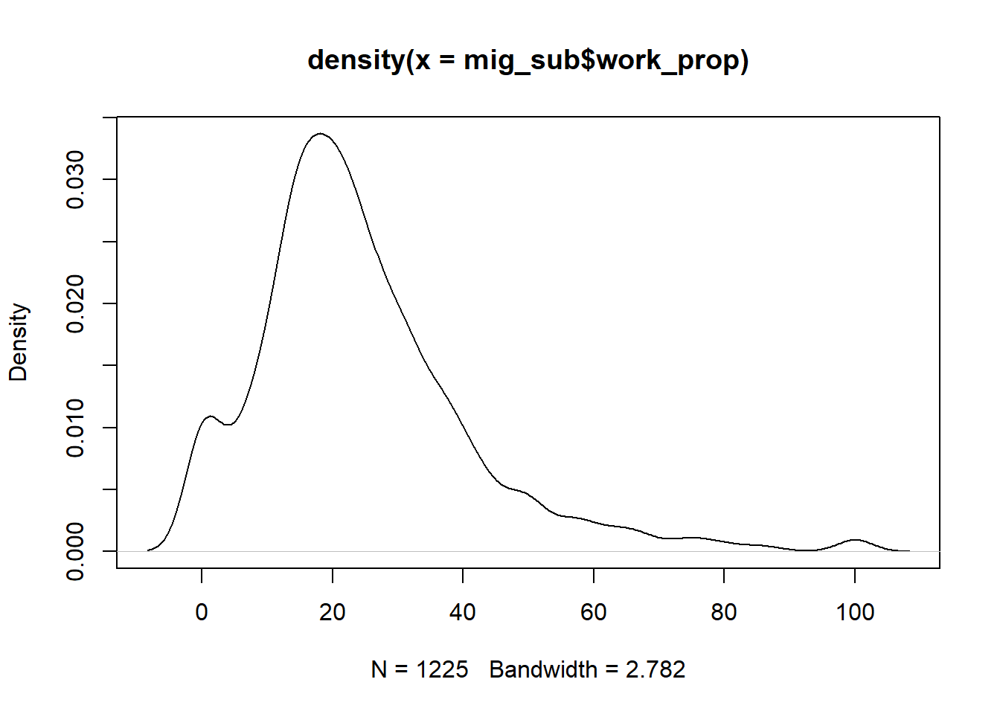
plot(density(mig_sub$educ_prop))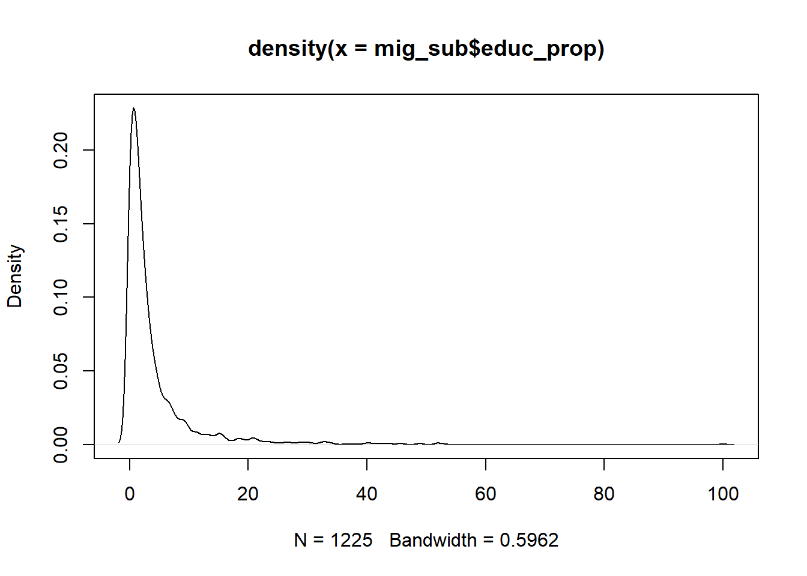
plot(density(mig_sub$mar_prop))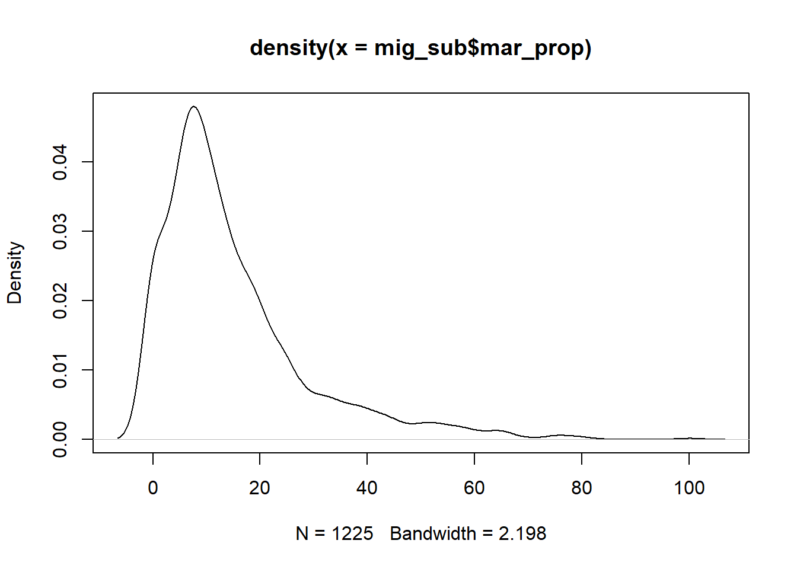
cor(mig_sub$mar_prop, mig_sub$work_prop)[1] -0.2868978cor(mig_sub$educ_prop, mig_sub$work_prop)[1] -0.07564778cor(mig_sub$educ_prop, mig_sub$mar_prop)[1] -0.1854825lm(mig_sub$work_prop~mig_sub$mar_prop)
Call:
lm(formula = mig_sub$work_prop ~ mig_sub$mar_prop)
Coefficients:
(Intercept) mig_sub$mar_prop
29.3850 -0.3361 reg1<-lm(mig_sub$work_prop~mig_sub$mar_prop)
summary(reg1)
Call:
lm(formula = mig_sub$work_prop ~ mig_sub$mar_prop)
Residuals:
Min 1Q Median 3Q Max
-29.385 -8.584 -1.435 6.655 70.615
Coefficients:
Estimate Std. Error t value Pr(>|t|)
(Intercept) 29.38497 0.65622 44.78 <2e-16 ***
mig_sub$mar_prop -0.33612 0.03209 -10.47 <2e-16 ***
---
Signif. codes: 0 '***' 0.001 '**' 0.01 '*' 0.05 '.' 0.1 ' ' 1
Residual standard error: 15.75 on 1223 degrees of freedom
Multiple R-squared: 0.08231, Adjusted R-squared: 0.08156
F-statistic: 109.7 on 1 and 1223 DF, p-value: < 2.2e-16 plot(reg1)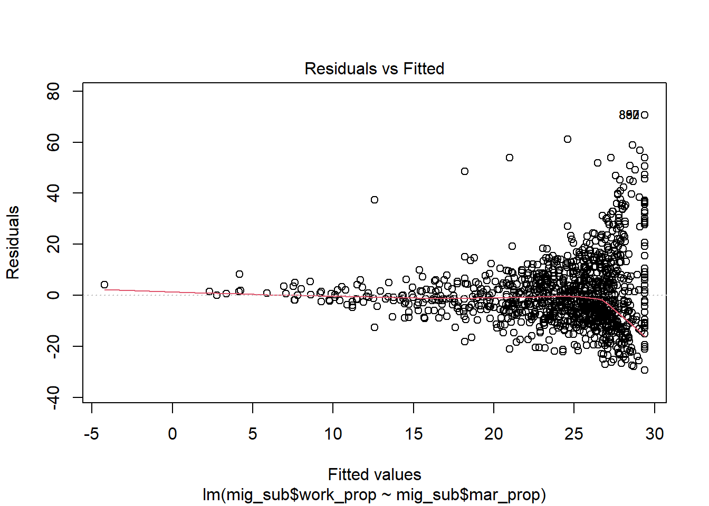
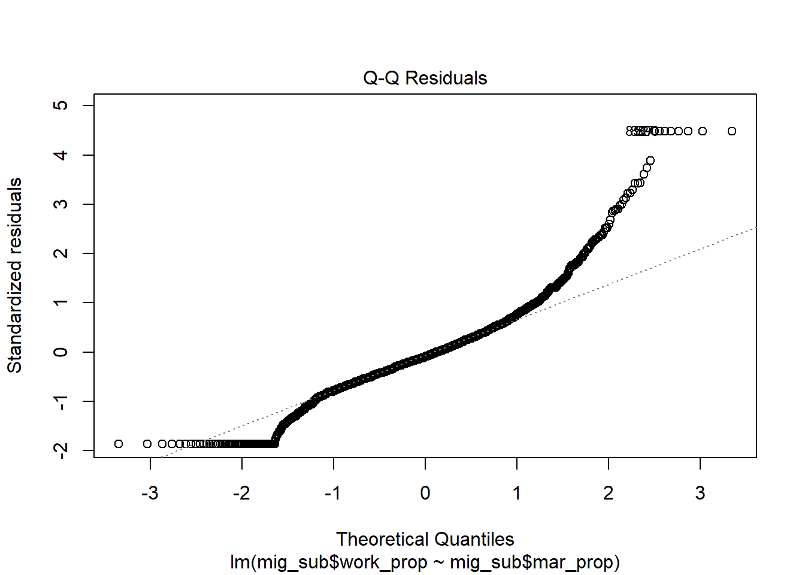
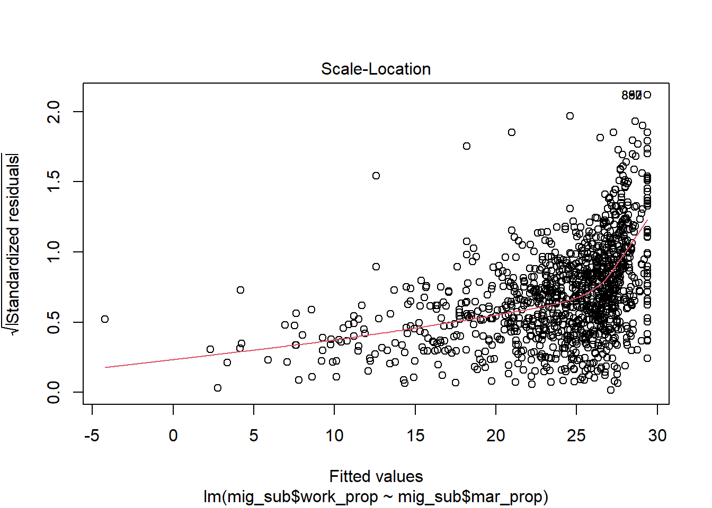
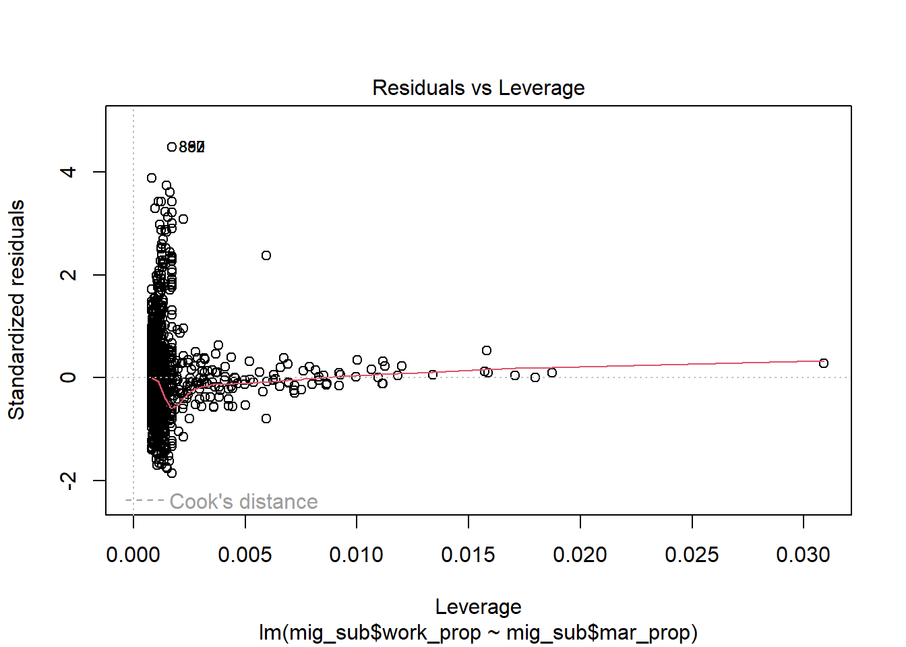
Using the data as it currently is would make the network too dense. There is movement between almost every state and some of these movements are irrelevant because the proportion is smaller than 1%. Hence, I looked into the distributions of the proportions of people who moved for work and marriage, in order to decide a threshold.
mig_network<-mig_sub%>%
relocate(work_prop,.before=tot_t)%>%
rename(from=last_res,to=area,weight=work_prop)
mig_network<-mig_network[1:3]
hist(mig_network$weight)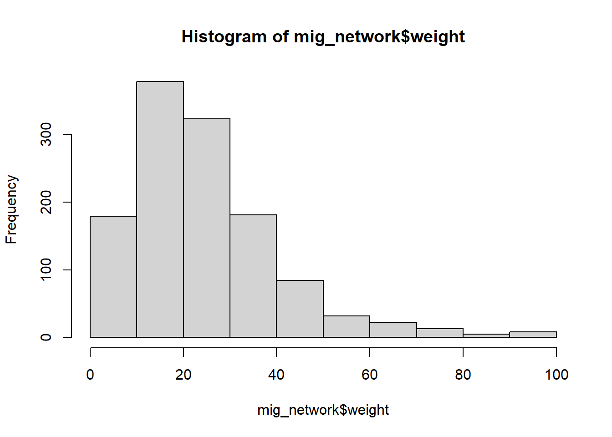
quantile(mig_network$weight) 0% 25% 50% 75% 100%
0.00 14.29 21.43 31.46 100.00 mig_mar<-mig_sub%>%
relocate(mar_prop,.before=tot_t)%>%
rename(from=last_res,to=area,weight=mar_prop)
mig_mar<-mig_mar[1:3]
hist(mig_mar$weight)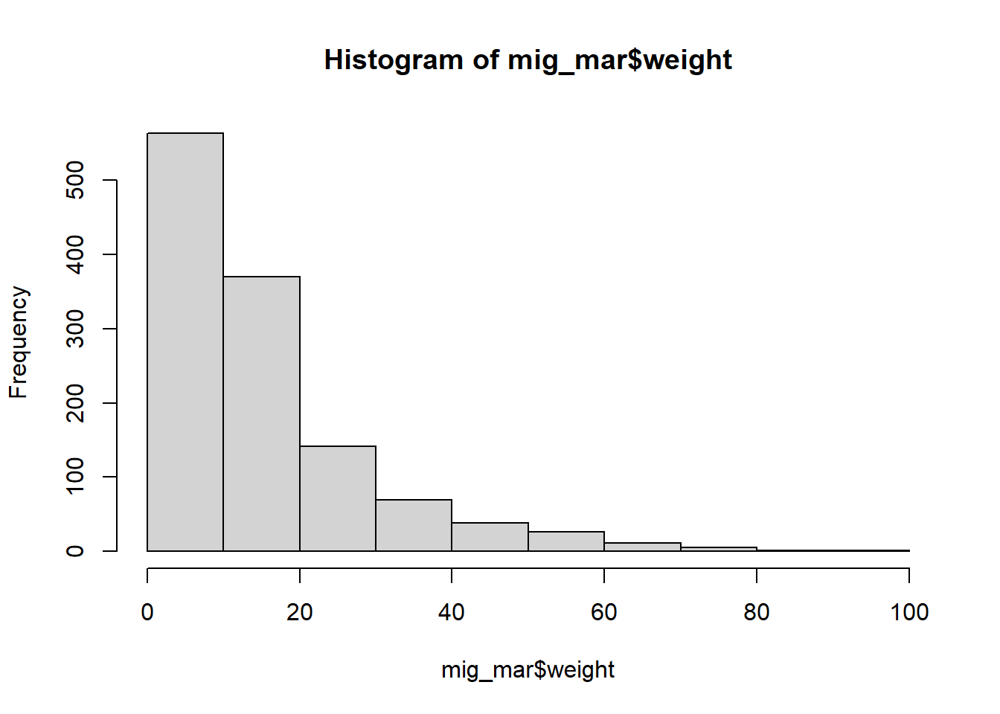
quantile(mig_mar$weight) 0% 25% 50% 75% 100%
0.00 5.88 10.91 19.45 100.00 After observing the distribution of the proportions of the reasons along with the quantiles, I decided to keep a threshold of 20%, this would roughly cover about half of the total observations for people who moved for work and the last quantile of the people who moved due to marriage.
mig_net_threshold<- mig_network%>%
filter(weight>=20)
dim(mig_network)[1] 1225 3dim(mig_net_threshold)[1] 676 3mig_work_ig<-igraph::graph_from_data_frame(mig_net_threshold,directed=TRUE)
mig_work_stat<-network(mig_net_threshold,matrix.type="edgelist")mig_mar_threshold <- mig_mar%>%
filter(weight>=20)
dim(mig_mar_threshold)[1] 294 3mig_mar_ig<-igraph::graph_from_data_frame(mig_mar_threshold,directed=TRUE)
mig_mar_stat<-network(mig_mar_threshold,matrix.type="edgelist")I kept both the descriptives from statnet and igraph because in a previous challenge, I found inconsistencies in the number of edges and other details and wanted to make sure that the same issue is not occurring here.
print(mig_work_stat) Network attributes:
vertices = 35
directed = TRUE
hyper = FALSE
loops = FALSE
multiple = FALSE
bipartite = FALSE
total edges= 676
missing edges= 0
non-missing edges= 676
Vertex attribute names:
vertex.names
Edge attribute names:
weight vcount(mig_work_ig)[1] 35ecount(mig_work_ig)[1] 676is_bipartite(mig_work_ig)[1] FALSEis_directed(mig_work_ig)[1] TRUEis_weighted(mig_work_ig)[1] TRUEprint(mig_mar_stat) Network attributes:
vertices = 35
directed = TRUE
hyper = FALSE
loops = FALSE
multiple = FALSE
bipartite = FALSE
total edges= 294
missing edges= 0
non-missing edges= 294
Vertex attribute names:
vertex.names
Edge attribute names:
weight vcount(mig_mar_ig)[1] 35ecount(mig_mar_ig)[1] 294is_bipartite(mig_mar_ig)[1] FALSEis_directed(mig_mar_ig)[1] TRUEis_weighted(mig_mar_ig)[1] TRUEThere is 1 component for the migrant network pertaining to movement for work as well as for the network pertaining to movement for marriage which means that both are connected graphs.
names(igraph::components(mig_work_ig))[1] "membership" "csize" "no" #igraph::components(mig.ig)$membership
igraph::components(mig_work_ig)$no [1] 1igraph::components(mig_work_ig)$csize[1] 35names(igraph::components(mig_mar_ig))[1] "membership" "csize" "no" #igraph::components(mig.ig)$membership
igraph::components(mig_mar_ig)$no [1] 1igraph::components(mig_mar_ig)$csize[1] 35Since a threshold was set after checking the quantiles, the density was manually created. However, these figures do show that for the same threshold, the migrant network for movement for work is more dense than the migrant network for movement for marriage. This illustrates that more people tend to move for economic opportunities in comparison to marriage.
graph.density(mig_work_ig,loops=FALSE)[1] 0.5680672graph.density(mig_mar_ig,loops=FALSE)[1] 0.2470588The plots of the networks visually demonstrate the density.
# switch to statnet object to plot
ggnet2(mig_work_stat,label=TRUE,label.size=2.5, arrow.size = 5, arrow.gap = 0.03,color = rep("#48bfe3", 35))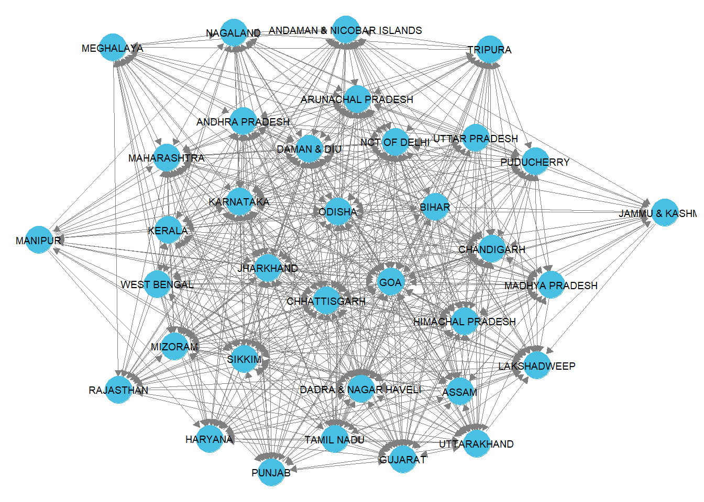
#save a ggnet layout that you like# switch to statnet object to plot
ggnet2(mig_mar_stat,label=TRUE,label.size=2.5, arrow.size = 5, arrow.gap = 0.03,color = rep("#48bfe3", 35))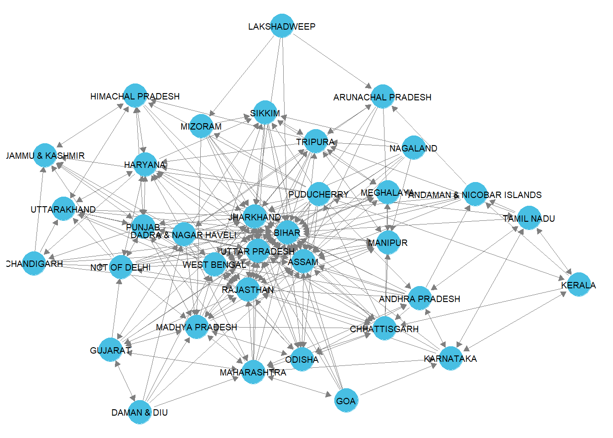
#save a ggnet layout that you likeSet <- c("#7400b8","#8400d2","#5e60ce", "#5390d9","#689dde", "#48bfe3", "#64dfdf", "#72efdd", "#89f2e3","#80ffdb")nodes_w<-data.frame(name = V(mig_work_ig)$name,
all.degree = igraph::degree(mig_work_ig, mode = 'all'),
out.degree = igraph::degree(mig_work_ig, mode = 'out'),
in.degree = igraph::degree(mig_work_ig, mode = 'in'),
strength_all=igraph::strength(mig_work_ig),
strength_in=igraph::strength(mig_work_ig,mode="in"),
strength_out=igraph::strength(mig_work_ig,mode="out"),
cons=igraph::constraint(mig_work_ig),
eigen=igraph:: evcent(mig_work_ig)$vector)
nodes_w$transitivity <- transitivity(mig_work_ig, type = 'local')
nodes_w$weighted.transitivity <- transitivity(mig_work_ig, type = 'weighted')
gtrans(mig_work_stat)[1] 0.7104843summary(nodes_w) name all.degree out.degree in.degree
Length:35 Min. :19.00 Min. : 6.00 Min. : 4.00
Class :character 1st Qu.:34.00 1st Qu.:15.00 1st Qu.:14.00
Mode :character Median :38.00 Median :20.00 Median :19.00
Mean :38.63 Mean :19.31 Mean :19.31
3rd Qu.:44.00 3rd Qu.:24.00 3rd Qu.:25.50
Max. :53.00 Max. :32.00 Max. :32.00
strength_all strength_in strength_out cons
Min. : 551.9 Min. : 115.7 Min. : 195.5 Min. :0.1163
1st Qu.:1136.4 1st Qu.: 435.0 1st Qu.: 454.6 1st Qu.:0.1232
Median :1295.2 Median : 556.1 Median : 594.1 Median :0.1248
Mean :1338.5 Mean : 669.2 Mean : 669.2 Mean :0.1270
3rd Qu.:1587.9 3rd Qu.: 840.1 3rd Qu.: 838.9 3rd Qu.:0.1290
Max. :2289.3 Max. :1704.7 Max. :1385.0 Max. :0.1495
eigen transitivity weighted.transitivity
Min. :0.2803 Min. :0.8044 Min. :0.6376
1st Qu.:0.5246 1st Qu.:0.8312 1st Qu.:0.8294
Median :0.6119 Median :0.8519 Median :0.8869
Mean :0.6138 Mean :0.8546 Mean :0.8977
3rd Qu.:0.7122 3rd Qu.:0.8741 3rd Qu.:0.9883
Max. :1.0000 Max. :0.9265 Max. :1.1905 nodes_m<-data.frame(name = V(mig_mar_ig)$name,
all.degree = igraph::degree(mig_mar_ig, mode = 'all'),
out.degree = igraph::degree(mig_mar_ig, mode = 'out'),
in.degree = igraph::degree(mig_mar_ig, mode = 'in'),
strength_all=igraph::strength(mig_mar_ig),
strength_in=igraph::strength(mig_mar_ig,mode="in"),
strength_out=igraph::strength(mig_mar_ig,mode="out"),
cons=igraph::constraint(mig_mar_ig),
eigen=igraph:: evcent(mig_mar_ig)$vector)
#Global
transitivity(mig_mar_ig, type="global")[1] 0.5459427##Average local clustering coefficient
transitivity(mig_mar_ig, type="average")[1] 0.6267173nodes_m$transitivity <- transitivity(mig_mar_ig, type = 'local')
nodes_m$weighted.transitivity <- transitivity(mig_mar_ig, type = 'weighted')
gtrans(mig_mar_stat)[1] 0.5551987summary(nodes_m) name all.degree out.degree in.degree
Length:35 Min. : 4.0 Min. : 2.0 Min. : 0.0
Class :character 1st Qu.: 9.0 1st Qu.: 6.0 1st Qu.: 3.0
Mode :character Median :14.0 Median : 8.0 Median : 7.0
Mean :16.8 Mean : 8.4 Mean : 8.4
3rd Qu.:21.0 3rd Qu.:11.0 3rd Qu.: 9.5
Max. :36.0 Max. :16.0 Max. :30.0
strength_all strength_in strength_out cons
Min. : 130.7 Min. : 0.00 Min. : 71.72 Min. :0.1452
1st Qu.: 323.5 1st Qu.: 98.95 1st Qu.:167.34 1st Qu.:0.1917
Median : 463.9 Median : 200.00 Median :247.94 Median :0.2197
Mean : 584.7 Mean : 292.35 Mean :292.35 Mean :0.2298
3rd Qu.: 799.0 3rd Qu.: 337.69 3rd Qu.:392.85 3rd Qu.:0.2642
Max. :1534.2 Max. :1352.18 Max. :742.49 Max. :0.3482
eigen transitivity weighted.transitivity
Min. :0.06377 Min. :0.3862 Min. :0.3933
1st Qu.:0.18972 1st Qu.:0.5303 1st Qu.:0.5362
Median :0.33821 Median :0.6167 Median :0.6468
Mean :0.41009 Mean :0.6267 Mean :0.6914
3rd Qu.:0.58714 3rd Qu.:0.7022 3rd Qu.:0.7736
Max. :1.00000 Max. :0.9091 Max. :1.3039 In the migration network weighted for movement due to work, the transitivity values for the global and average clustering coefficients are both roughly 0.85. This depicts that every state is connected to almost every other remaining state. In other words, migration occurs between almost all states. However, the proportion of migrants for each connection may not be a significant amount. This is explored by using strength as a network measure.
In the migration network weighted for movement due to marriage, the transitivity is lower, with a global clustering coefficient of roughly 0.55 and local clustering coefficient of roughly 0.63. This demonstrates that there are densely interconnected subgroups. It also shows that when it comes to migration for marriage, people are more selective.
In India, arranged marriages are common and marriages within the same caste are preferred (Sahgal et al., 2021). The caste system is a social stratification system; one is born into a fixed social group referred to as their caste (“Systems of Social Stratification”, n.d.). While people of the same caste can reside in multiple states, perhaps the cultural differences between states result in people being more selective about marriage.
Many states have their own languages, distinct food, festivals, etc. Often the language or food habits may be similar for neighbouring states. Therefore, it may be the case that the subgroups are formed based on neighbouring states since one would prefer to marry someone who is culturally similar. Whether the subgroups are based on states that share boundaries or in a particular region can be explored through clustering.
#Global
transitivity(mig_work_ig, type="global")[1] 0.8484054##Average local clustering coefficient
transitivity(mig_work_ig, type="average")[1] 0.8546428melt(nodes_w) %>% filter(variable == 'transitivity' | variable == 'weighted.transitivity') %>%
ggplot(aes(x = value, fill = variable, color = variable)) + geom_density(alpha = 0.2) +
ggtitle('Transitivity Distribution, Local and Weighted for Migration due to Work')
#Global
transitivity(mig_mar_ig, type="global")[1] 0.5459427##Average local clustering coefficient
transitivity(mig_mar_ig, type="average")[1] 0.6267173melt(nodes_m) %>% filter(variable == 'transitivity' | variable == 'weighted.transitivity') %>%
ggplot(aes(x = value, fill = variable, color = variable)) + geom_density(alpha = 0.2) +
ggtitle('Transitivity Distribution, Local and Weighted for Migration due to Marriage')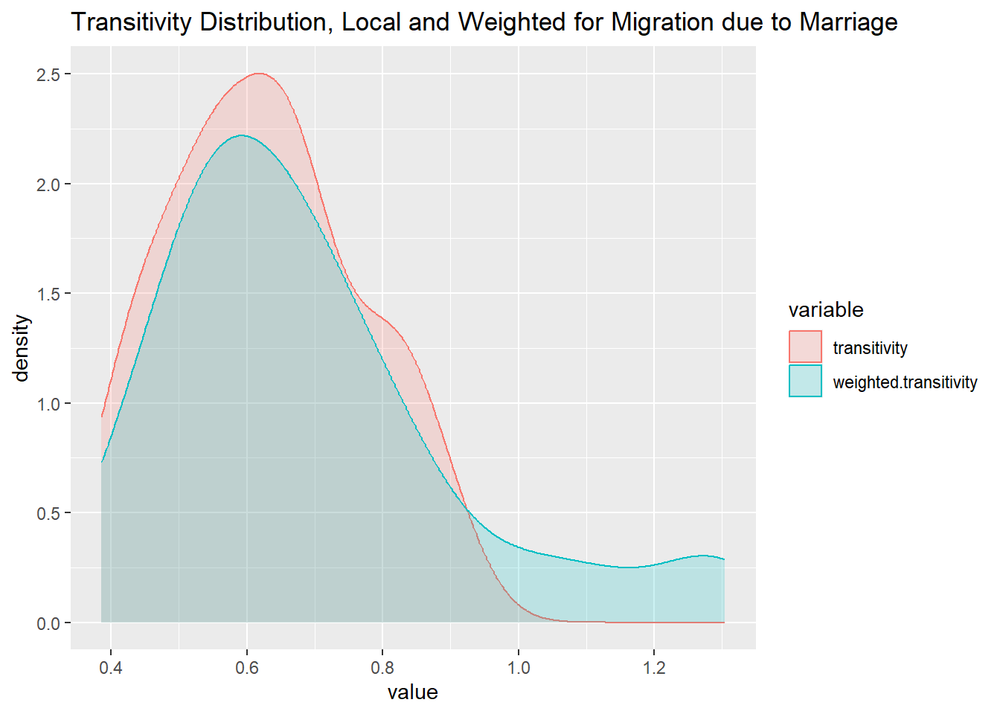
The measures of degree represent how certain states have multiple connections, however, since there are weights this might not be the most accurate depiction. This is because some states could have many ties with other states but the proportion of people who are moving could be low. Therefore, I looked into the strength measure which takes the weights into account.
nodes_w%>%select("name","all.degree","in.degree","out.degree")%>%arrange(desc(all.degree)) name all.degree in.degree
CHHATTISGARH CHHATTISGARH 53 26
NCT OF DELHI NCT OF DELHI 52 32
JHARKHAND JHARKHAND 50 20
GOA GOA 50 29
DAMAN & DIU DAMAN & DIU 49 32
ODISHA ODISHA 48 17
SIKKIM SIKKIM 45 24
KARNATAKA KARNATAKA 45 25
ANDHRA PRADESH ANDHRA PRADESH 44 19
KERALA KERALA 44 13
CHANDIGARH CHANDIGARH 44 28
ARUNACHAL PRADESH ARUNACHAL PRADESH 43 29
TAMIL NADU TAMIL NADU 42 15
MADHYA PRADESH MADHYA PRADESH 40 17
UTTARAKHAND UTTARAKHAND 40 17
GUJARAT GUJARAT 40 23
TRIPURA TRIPURA 39 17
DADRA & NAGAR HAVELI DADRA & NAGAR HAVELI 38 31
PUDUCHERRY PUDUCHERRY 38 18
HIMACHAL PRADESH HIMACHAL PRADESH 37 25
BIHAR BIHAR 36 4
MIZORAM MIZORAM 36 21
MAHARASHTRA MAHARASHTRA 36 26
UTTAR PRADESH UTTAR PRADESH 35 7
ANDAMAN & NICOBAR ISLANDS ANDAMAN & NICOBAR ISLANDS 35 23
ASSAM ASSAM 34 11
NAGALAND NAGALAND 34 18
WEST BENGAL WEST BENGAL 33 7
HARYANA HARYANA 33 21
LAKSHADWEEP LAKSHADWEEP 33 27
PUNJAB PUNJAB 30 15
RAJASTHAN RAJASTHAN 28 11
MEGHALAYA MEGHALAYA 27 12
MANIPUR MANIPUR 22 6
JAMMU & KASHMIR JAMMU & KASHMIR 19 10
out.degree
CHHATTISGARH 27
NCT OF DELHI 20
JHARKHAND 30
GOA 21
DAMAN & DIU 17
ODISHA 31
SIKKIM 21
KARNATAKA 20
ANDHRA PRADESH 25
KERALA 31
CHANDIGARH 16
ARUNACHAL PRADESH 14
TAMIL NADU 27
MADHYA PRADESH 23
UTTARAKHAND 23
GUJARAT 17
TRIPURA 22
DADRA & NAGAR HAVELI 7
PUDUCHERRY 20
HIMACHAL PRADESH 12
BIHAR 32
MIZORAM 15
MAHARASHTRA 10
UTTAR PRADESH 28
ANDAMAN & NICOBAR ISLANDS 12
ASSAM 23
NAGALAND 16
WEST BENGAL 26
HARYANA 12
LAKSHADWEEP 6
PUNJAB 15
RAJASTHAN 17
MEGHALAYA 15
MANIPUR 16
JAMMU & KASHMIR 9nodes_m%>%select("name","all.degree","in.degree","out.degree")%>%arrange(desc(all.degree)) name all.degree in.degree
BIHAR BIHAR 36 30
ASSAM ASSAM 35 25
UTTAR PRADESH UTTAR PRADESH 35 26
RAJASTHAN RAJASTHAN 32 20
JHARKHAND JHARKHAND 32 24
WEST BENGAL WEST BENGAL 28 14
PUNJAB PUNJAB 23 10
MADHYA PRADESH MADHYA PRADESH 22 11
HARYANA HARYANA 21 10
CHHATTISGARH CHHATTISGARH 21 9
MAHARASHTRA MAHARASHTRA 20 8
PUDUCHERRY PUDUCHERRY 19 3
TRIPURA TRIPURA 19 9
DADRA & NAGAR HAVELI DADRA & NAGAR HAVELI 18 3
ODISHA ODISHA 17 8
ANDHRA PRADESH ANDHRA PRADESH 17 5
NCT OF DELHI NCT OF DELHI 16 5
UTTARAKHAND UTTARAKHAND 14 7
GUJARAT GUJARAT 14 5
SIKKIM SIKKIM 14 7
MEGHALAYA MEGHALAYA 13 8
HIMACHAL PRADESH HIMACHAL PRADESH 12 6
KARNATAKA KARNATAKA 12 5
MANIPUR MANIPUR 12 9
TAMIL NADU TAMIL NADU 11 4
JAMMU & KASHMIR JAMMU & KASHMIR 9 7
ANDAMAN & NICOBAR ISLANDS ANDAMAN & NICOBAR ISLANDS 9 4
CHANDIGARH CHANDIGARH 8 2
NAGALAND NAGALAND 8 0
MIZORAM MIZORAM 8 2
KERALA KERALA 8 3
GOA GOA 7 1
ARUNACHAL PRADESH ARUNACHAL PRADESH 7 3
DAMAN & DIU DAMAN & DIU 7 1
LAKSHADWEEP LAKSHADWEEP 4 0
out.degree
BIHAR 6
ASSAM 10
UTTAR PRADESH 9
RAJASTHAN 12
JHARKHAND 8
WEST BENGAL 14
PUNJAB 13
MADHYA PRADESH 11
HARYANA 11
CHHATTISGARH 12
MAHARASHTRA 12
PUDUCHERRY 16
TRIPURA 10
DADRA & NAGAR HAVELI 15
ODISHA 9
ANDHRA PRADESH 12
NCT OF DELHI 11
UTTARAKHAND 7
GUJARAT 9
SIKKIM 7
MEGHALAYA 5
HIMACHAL PRADESH 6
KARNATAKA 7
MANIPUR 3
TAMIL NADU 7
JAMMU & KASHMIR 2
ANDAMAN & NICOBAR ISLANDS 5
CHANDIGARH 6
NAGALAND 8
MIZORAM 6
KERALA 5
GOA 6
ARUNACHAL PRADESH 4
DAMAN & DIU 6
LAKSHADWEEP 4nodes_w %>% melt %>%filter(variable=='strength_all'|variable=='strength_in'|variable=='strength_out')%>%
ggplot(aes(x = value, fill = variable, color = variable)) + geom_density(alpha = .2, bw = 5) +
ggtitle('Strength Distribution')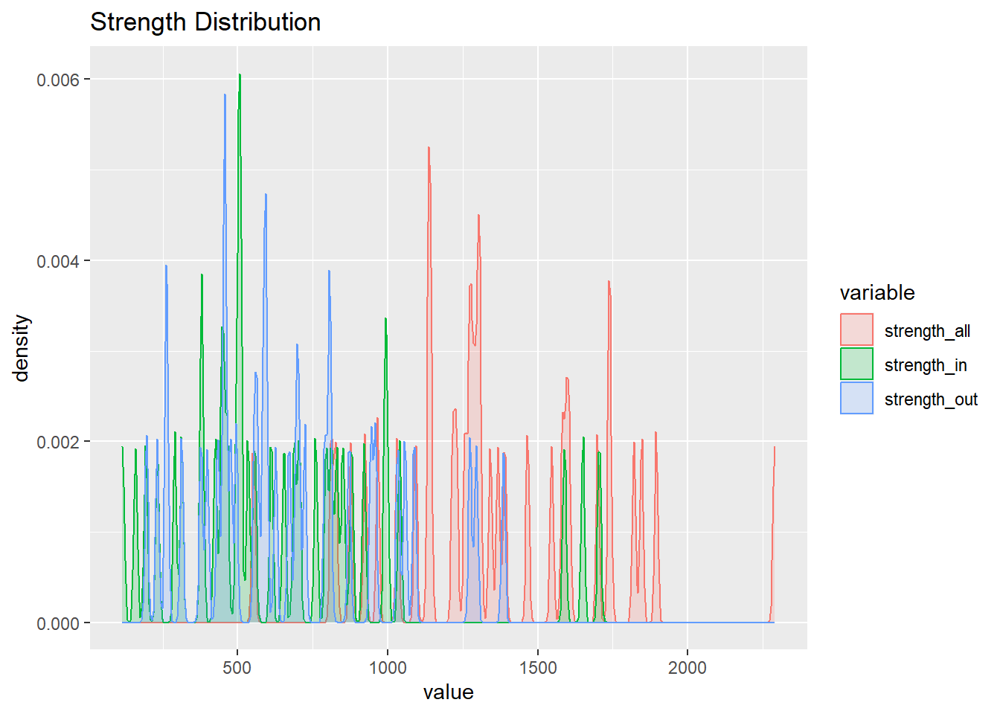
nodes_m %>% melt %>%filter(variable=='strength_all'|variable=='strength_in'|variable=='strength_out')%>%
ggplot(aes(x = value, fill = variable, color = variable)) + geom_density(alpha = .2, bw = 5) +
ggtitle('Strength Distribution')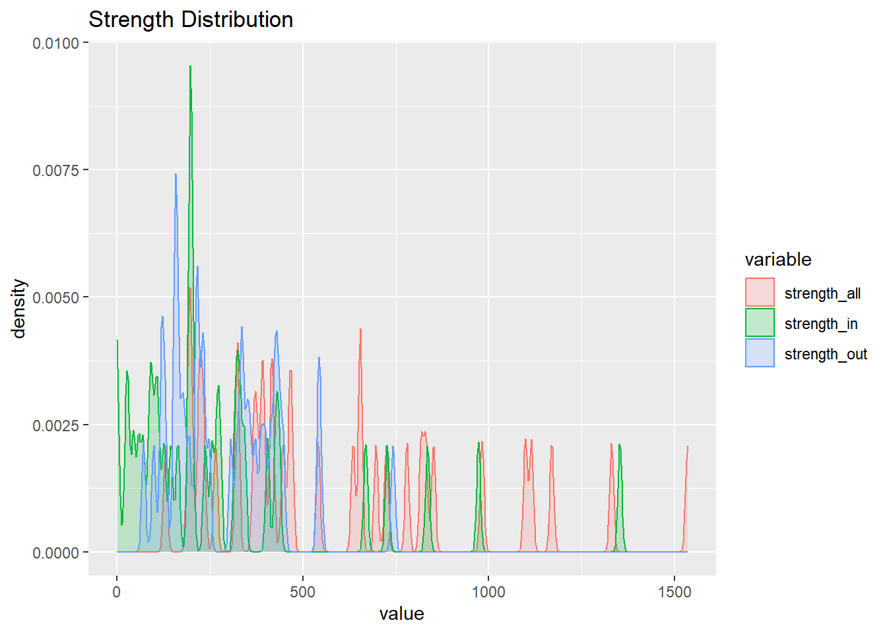
For the migrants moving out for work, it is interesting to see that the top 3 states are neighbouring states. West Bengal, Chhattisgarh and Uttar Pradesh also share borders with the top 3 states. So there is majorly out migration from work occurring from the Eastern part and a bit of the Northern part of India . This suggests that these regions may not have as many economic opportunities or chances for growth.
For the movement due to marriage, 2 of the top 3 places (Dadra & Nagar Haveli and Puducherry) are union territories which have a smaller population in comparison to other states. Additionally, a prominent region of out migration for marriage can be observed from the North western region of India (Punjab, Rajasthan and Haryana).
out_w<-nodes_w %>% arrange(desc(strength_out))%>%slice(1:10)
ggplot(out_w, aes(fill=name,x=reorder(name,strength_out),y=strength_out))+
geom_bar(stat = "identity")+
scale_fill_manual(values=Set,guide="none")+
coord_flip()+
geom_text(aes(label=round(strength_out,digits=2)),position=position_stack(vjust=0.5))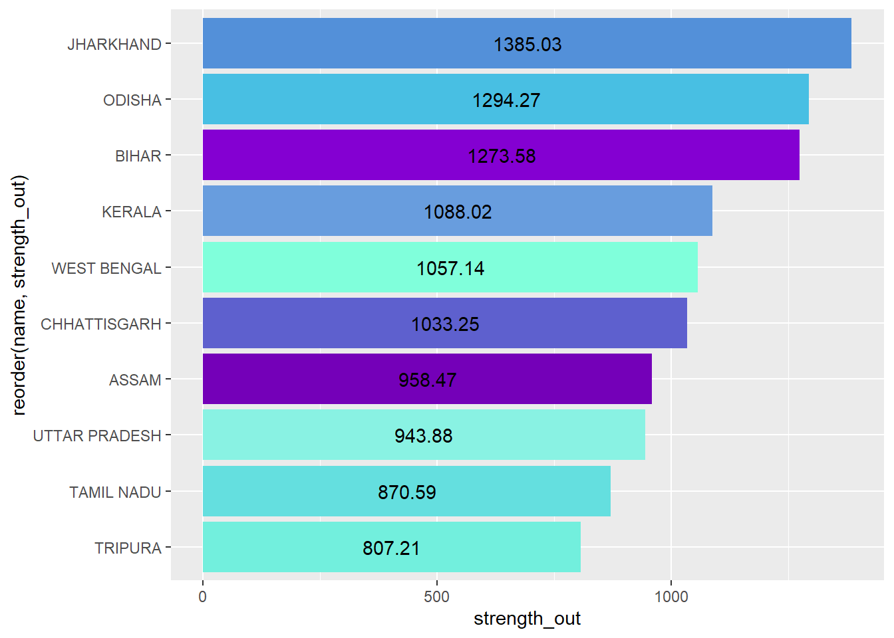
out_m<-nodes_m%>% arrange(desc(strength_out))%>%slice(1:10)
ggplot(out_m, aes(fill=name,x=reorder(name,strength_out),y=strength_out))+
geom_bar(stat = "identity")+
scale_fill_manual(values=Set,guide="none")+
coord_flip()+
geom_text(aes(label=round(strength_out,digits=2)),position=position_stack(vjust=0.5))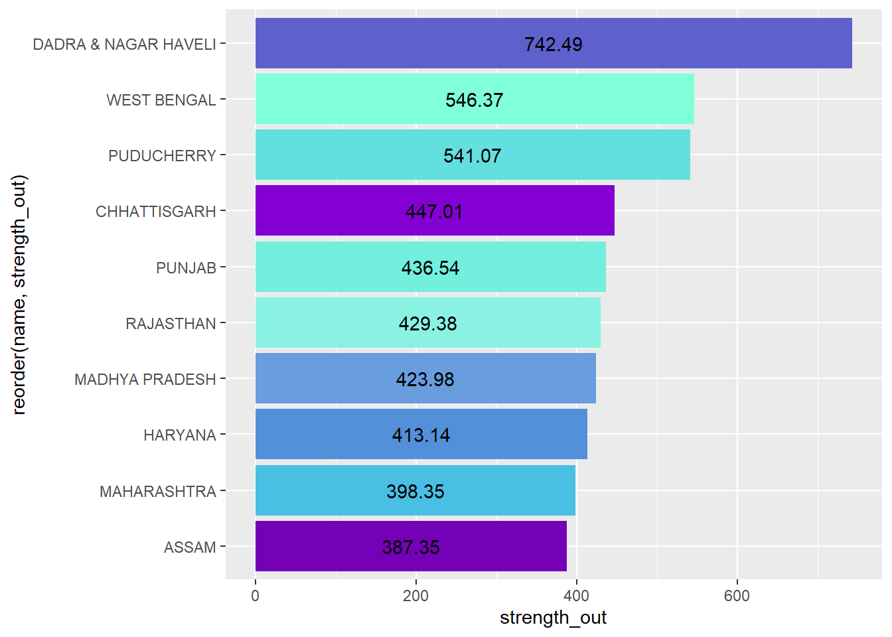
For the migrants moving to places for work, the top 3 receiving states are union territories. There is no prominent region which has in-migration, the states in the graph are from various parts of India.
For the receiving states of migrants who move for marriage, interestingly, the top 3 states are the same states that fell among the top 10 in those who moved out for work. There is also a significant overlap in the states that sent out migrants due to marriage and also receive migrants due to marriage- Assam, Rajasthan, West Bengal and Haryana. It may be the case that many people move between Haryana and Rajasthan since they are neighbouring states. Similary, since one of the neighbouring states to Assam is West Bengal, more people between the two due to marriage.
in_w<-nodes_w %>% arrange(desc(strength_in))%>%slice(1:10)
ggplot(in_w, aes(fill=name,x=reorder(name,strength_in),y=strength_in))+
geom_bar(stat = "identity")+
scale_fill_manual(values=Set,guide="none")+
coord_flip()+
geom_text(aes(label=round(strength_in,digits=2)),position=position_stack(vjust=0.5))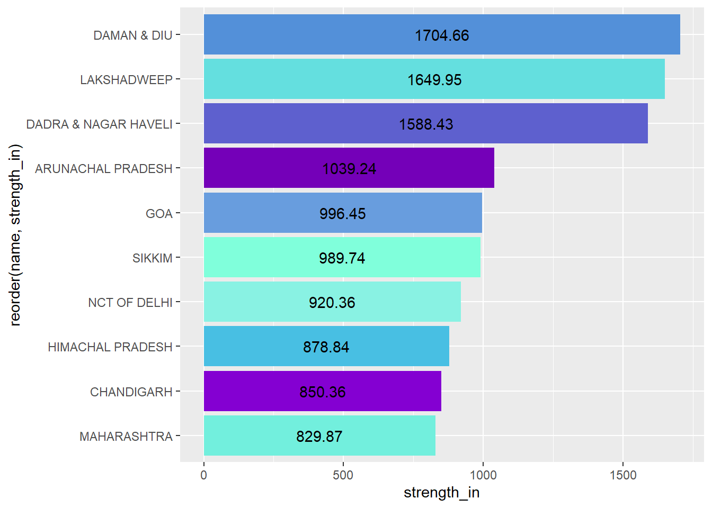
in_m<-nodes_m %>% arrange(desc(strength_in))%>%slice(1:10)
ggplot(in_m, aes(fill=name,x=reorder(name,strength_in),y=strength_in))+
geom_bar(stat = "identity")+
scale_fill_manual(values=Set,guide="none")+
coord_flip()+
geom_text(aes(label=round(strength_in,digits=2)),position=position_stack(vjust=0.5))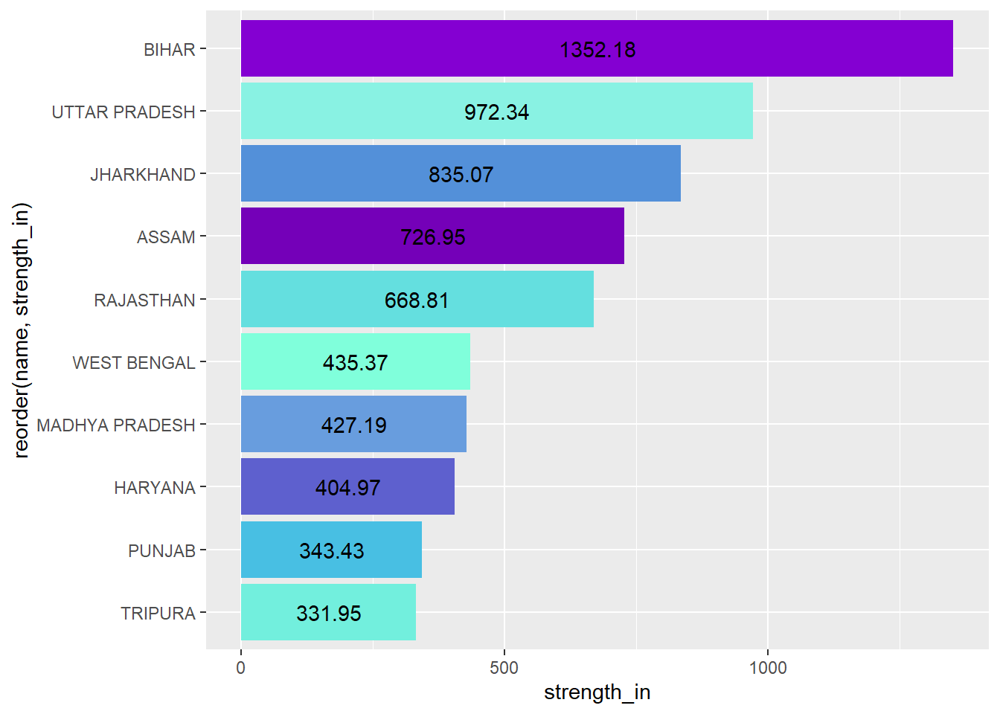
The following tables show the eigenvector centralities and constraints for the nodes of the 2 networks. The diameters for the two networks has also been provided.
However, since the data did not record dynamic migration, that is the same person moving to more than one state in the time frame studied, the indirect connections between each node are not significant/ they do not represent movement. Since the measures in this section depict how nodes are connected to nodes that are central, information flow between nodes that are indirectly connected and the distance between one node to the other, they do not give interpretable information for the case of the migrant networks in this study.
nodes_w %>% select(name,eigen)%>%arrange(desc(eigen)) name eigen
DAMAN & DIU DAMAN & DIU 1.0000000
LAKSHADWEEP LAKSHADWEEP 0.8448656
JHARKHAND JHARKHAND 0.8283580
DADRA & NAGAR HAVELI DADRA & NAGAR HAVELI 0.8082074
ODISHA ODISHA 0.7657562
CHHATTISGARH CHHATTISGARH 0.7586060
GOA GOA 0.7465529
ARUNACHAL PRADESH ARUNACHAL PRADESH 0.7272429
KERALA KERALA 0.7155870
NCT OF DELHI NCT OF DELHI 0.7088015
SIKKIM SIKKIM 0.7012270
MIZORAM MIZORAM 0.6656215
TRIPURA TRIPURA 0.6369395
BIHAR BIHAR 0.6259032
KARNATAKA KARNATAKA 0.6204448
UTTARAKHAND UTTARAKHAND 0.6183229
ASSAM ASSAM 0.6127363
TAMIL NADU TAMIL NADU 0.6118898
CHANDIGARH CHANDIGARH 0.6058887
PUDUCHERRY PUDUCHERRY 0.5941980
HIMACHAL PRADESH HIMACHAL PRADESH 0.5901149
MADHYA PRADESH MADHYA PRADESH 0.5864338
ANDHRA PRADESH ANDHRA PRADESH 0.5736233
WEST BENGAL WEST BENGAL 0.5645886
UTTAR PRADESH UTTAR PRADESH 0.5415897
GUJARAT GUJARAT 0.5324478
ANDAMAN & NICOBAR ISLANDS ANDAMAN & NICOBAR ISLANDS 0.5166731
MAHARASHTRA MAHARASHTRA 0.4919679
NAGALAND NAGALAND 0.4818445
HARYANA HARYANA 0.4627093
PUNJAB PUNJAB 0.4485455
RAJASTHAN RAJASTHAN 0.4298923
MANIPUR MANIPUR 0.4084978
MEGHALAYA MEGHALAYA 0.3754753
JAMMU & KASHMIR JAMMU & KASHMIR 0.2803492nodes_m %>% select(name,eigen)%>%arrange(desc(eigen)) name eigen
BIHAR BIHAR 1.00000000
UTTAR PRADESH UTTAR PRADESH 0.96855016
JHARKHAND JHARKHAND 0.87264309
RAJASTHAN RAJASTHAN 0.79904410
WEST BENGAL WEST BENGAL 0.75755352
ASSAM ASSAM 0.74267866
MADHYA PRADESH MADHYA PRADESH 0.68642070
ODISHA ODISHA 0.61783178
CHHATTISGARH CHHATTISGARH 0.59601103
HARYANA HARYANA 0.57826859
DADRA & NAGAR HAVELI DADRA & NAGAR HAVELI 0.56414976
PUNJAB PUNJAB 0.49458147
MAHARASHTRA MAHARASHTRA 0.43999992
TRIPURA TRIPURA 0.43199232
PUDUCHERRY PUDUCHERRY 0.39803363
GUJARAT GUJARAT 0.35839908
ANDHRA PRADESH ANDHRA PRADESH 0.33919454
SIKKIM SIKKIM 0.33821079
NCT OF DELHI NCT OF DELHI 0.33461578
UTTARAKHAND UTTARAKHAND 0.33124627
MEGHALAYA MEGHALAYA 0.28907521
MANIPUR MANIPUR 0.27565849
HIMACHAL PRADESH HIMACHAL PRADESH 0.24238910
JAMMU & KASHMIR JAMMU & KASHMIR 0.21732747
NAGALAND NAGALAND 0.20749657
KARNATAKA KARNATAKA 0.19701447
ARUNACHAL PRADESH ARUNACHAL PRADESH 0.18243020
MIZORAM MIZORAM 0.17724892
GOA GOA 0.17170353
DAMAN & DIU DAMAN & DIU 0.15848586
CHANDIGARH CHANDIGARH 0.15413406
ANDAMAN & NICOBAR ISLANDS ANDAMAN & NICOBAR ISLANDS 0.15362489
TAMIL NADU TAMIL NADU 0.13093098
LAKSHADWEEP LAKSHADWEEP 0.08256025
KERALA KERALA 0.06376549nodes_w %>% select(name,cons)%>%arrange(desc(cons)) name cons
MANIPUR MANIPUR 0.1494773
JAMMU & KASHMIR JAMMU & KASHMIR 0.1450890
MEGHALAYA MEGHALAYA 0.1416492
RAJASTHAN RAJASTHAN 0.1369641
PUDUCHERRY PUDUCHERRY 0.1333667
PUNJAB PUNJAB 0.1325304
HARYANA HARYANA 0.1321012
UTTARAKHAND UTTARAKHAND 0.1313037
ASSAM ASSAM 0.1295478
UTTAR PRADESH UTTAR PRADESH 0.1284668
GUJARAT GUJARAT 0.1282502
NAGALAND NAGALAND 0.1280334
MIZORAM MIZORAM 0.1279557
MADHYA PRADESH MADHYA PRADESH 0.1275386
TAMIL NADU TAMIL NADU 0.1274942
ANDHRA PRADESH ANDHRA PRADESH 0.1265009
CHANDIGARH CHANDIGARH 0.1251778
HIMACHAL PRADESH HIMACHAL PRADESH 0.1248320
TRIPURA TRIPURA 0.1248301
WEST BENGAL WEST BENGAL 0.1244692
ANDAMAN & NICOBAR ISLANDS ANDAMAN & NICOBAR ISLANDS 0.1242434
ARUNACHAL PRADESH ARUNACHAL PRADESH 0.1241138
LAKSHADWEEP LAKSHADWEEP 0.1238052
KERALA KERALA 0.1237828
NCT OF DELHI NCT OF DELHI 0.1237559
KARNATAKA KARNATAKA 0.1236612
BIHAR BIHAR 0.1228097
SIKKIM SIKKIM 0.1220418
MAHARASHTRA MAHARASHTRA 0.1214947
GOA GOA 0.1209099
DADRA & NAGAR HAVELI DADRA & NAGAR HAVELI 0.1201155
CHHATTISGARH CHHATTISGARH 0.1178695
DAMAN & DIU DAMAN & DIU 0.1169231
ODISHA ODISHA 0.1169028
JHARKHAND JHARKHAND 0.1162591nodes_m %>% select(name,cons)%>%arrange(desc(cons)) name cons
LAKSHADWEEP LAKSHADWEEP 0.3482192
KERALA KERALA 0.3305115
DAMAN & DIU DAMAN & DIU 0.3063585
HIMACHAL PRADESH HIMACHAL PRADESH 0.3059683
GOA GOA 0.2942055
UTTARAKHAND UTTARAKHAND 0.2774808
TAMIL NADU TAMIL NADU 0.2746809
CHANDIGARH CHANDIGARH 0.2705776
KARNATAKA KARNATAKA 0.2662705
ARUNACHAL PRADESH ARUNACHAL PRADESH 0.2620318
NAGALAND NAGALAND 0.2581389
GUJARAT GUJARAT 0.2555773
ODISHA ODISHA 0.2460557
JAMMU & KASHMIR JAMMU & KASHMIR 0.2454465
MEGHALAYA MEGHALAYA 0.2366417
MIZORAM MIZORAM 0.2344925
SIKKIM SIKKIM 0.2272150
CHHATTISGARH CHHATTISGARH 0.2196708
MANIPUR MANIPUR 0.2193605
NCT OF DELHI NCT OF DELHI 0.2179952
HARYANA HARYANA 0.2131840
MADHYA PRADESH MADHYA PRADESH 0.2115553
PUNJAB PUNJAB 0.2082625
ANDHRA PRADESH ANDHRA PRADESH 0.2077310
MAHARASHTRA MAHARASHTRA 0.1969132
ANDAMAN & NICOBAR ISLANDS ANDAMAN & NICOBAR ISLANDS 0.1947735
TRIPURA TRIPURA 0.1886541
WEST BENGAL WEST BENGAL 0.1827090
RAJASTHAN RAJASTHAN 0.1766241
JHARKHAND JHARKHAND 0.1749997
UTTAR PRADESH UTTAR PRADESH 0.1663209
DADRA & NAGAR HAVELI DADRA & NAGAR HAVELI 0.1659677
ASSAM ASSAM 0.1576060
PUDUCHERRY PUDUCHERRY 0.1560535
BIHAR BIHAR 0.1452091diameter(mig_work_ig)[1] 69.65farthest_vertices(mig_work_ig)$vertices
+ 2/35 vertices, named, from 1af1a9f:
[1] MAHARASHTRA BIHAR
$distance
[1] 69.65sna::isolates(mig_work_stat)integer(0)diameter(mig_mar_ig)[1] 140.31farthest_vertices(mig_mar_ig)$vertices
+ 2/35 vertices, named, from 1af7f25:
[1] JAMMU & KASHMIR KARNATAKA
$distance
[1] 140.31sna::isolates(mig_mar_stat)integer(0)For community identification, I decided to use the walktrap community detection and spinglass methods. Both of these algorithms support weights, however, the directions of edges are ignored.
The communities identified by the 2 algorithms differ vastly for migrants who move for work. The modularity scores (3.1 e-16 and 0.006) indicate that the communities are significantly different from what would be expected in a random network.
Since this algorithm utilises random walks and we have established that in this network, almost every node is connected to all other nodes, this results in only one community containing all the nodes being detected.
set.seed(20)
#Run clustering algorithm: walktrap
workto.wt<-walktrap.community(mig_work_ig,weights=NULL)
#Inspect community membership
igraph::groups(workto.wt)$`1`
[1] "UTTAR PRADESH" "BIHAR"
[3] "SIKKIM" "ARUNACHAL PRADESH"
[5] "JHARKHAND" "ODISHA"
[7] "CHHATTISGARH" "MADHYA PRADESH"
[9] "GOA" "ANDAMAN & NICOBAR ISLANDS"
[11] "JAMMU & KASHMIR" "UTTARAKHAND"
[13] "RAJASTHAN" "MANIPUR"
[15] "MIZORAM" "TRIPURA"
[17] "ASSAM" "WEST BENGAL"
[19] "GUJARAT" "DAMAN & DIU"
[21] "DADRA & NAGAR HAVELI" "MAHARASHTRA"
[23] "ANDHRA PRADESH" "KARNATAKA"
[25] "KERALA" "TAMIL NADU"
[27] "PUDUCHERRY" "NAGALAND"
[29] "HIMACHAL PRADESH" "PUNJAB"
[31] "HARYANA" "NCT OF DELHI"
[33] "MEGHALAYA" "LAKSHADWEEP"
[35] "CHANDIGARH" #add community membership as a vertex attribute
nodes_w$comm.wt<-workto.wt$membership
#plot the network with community coloring
plot(workto.wt,mig_work_ig)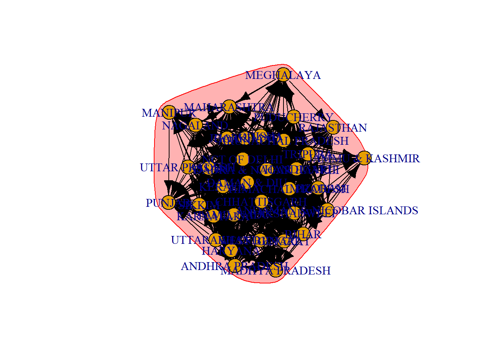
#modularity
mod_w<-modularity(workto.wt)
mod_w[1] 3.106238e-16This algorithm has identified 4 different clusters. Each cluster contains states from a variety of regions, illustrating that people are willing to move farther distances for employment.
set.seed(20)
#Run clustering algorithm: spinglass
workto.spin<-spinglass.community(mig_work_ig)
#Inspect community membership
igraph::groups(workto.spin)$`1`
[1] "ANDAMAN & NICOBAR ISLANDS" "RAJASTHAN"
[3] "MIZORAM" "WEST BENGAL"
[5] "KARNATAKA" "PUDUCHERRY"
[7] "NCT OF DELHI" "MEGHALAYA"
$`2`
[1] "BIHAR" "MADHYA PRADESH" "UTTARAKHAND" "GUJARAT"
[5] "TAMIL NADU" "PUNJAB" "LAKSHADWEEP"
$`3`
[1] "SIKKIM" "ARUNACHAL PRADESH" "ODISHA"
[4] "GOA" "MANIPUR" "ASSAM"
[7] "DAMAN & DIU" "MAHARASHTRA" "ANDHRA PRADESH"
[10] "KERALA" "NAGALAND" "HARYANA"
$`4`
[1] "UTTAR PRADESH" "JHARKHAND" "CHHATTISGARH"
[4] "JAMMU & KASHMIR" "TRIPURA" "DADRA & NAGAR HAVELI"
[7] "HIMACHAL PRADESH" "CHANDIGARH" #add community membership as a vertex attribute
nodes_w$comm.spin<-workto.spin$membership
#plot the network with community coloring
plot(workto.spin,mig_work_ig)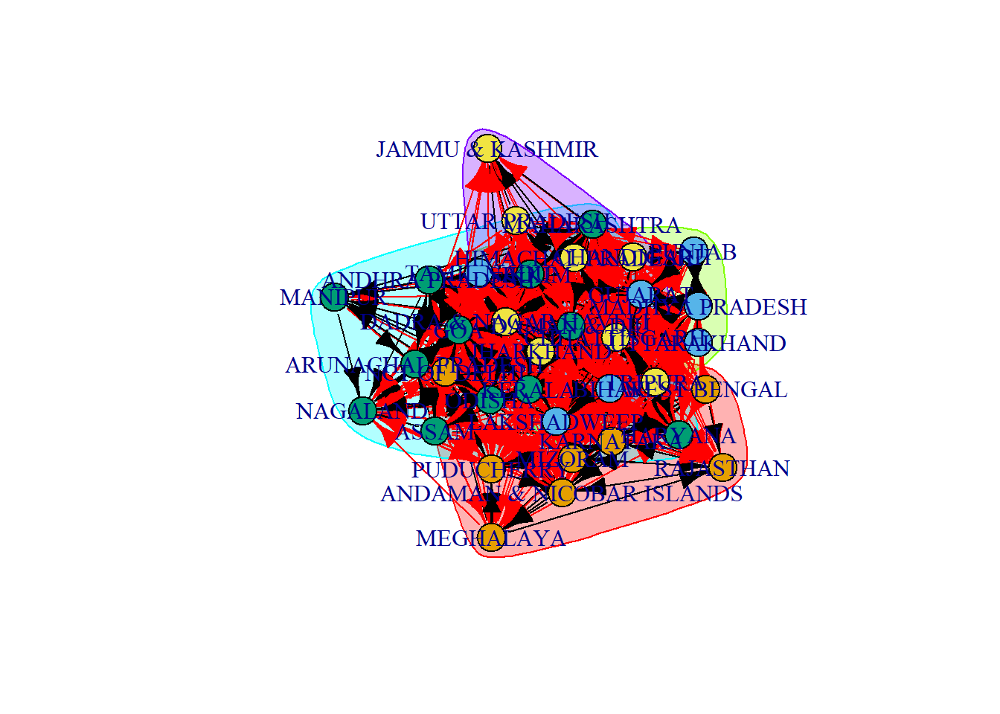
#collect modularity scores to compare
mod_spin_w<-modularity(workto.spin)
mod_spin_w[1] 0.005774148The communities identified by the 2 algorithms are quite similar for migrants who move for marriage. The modularity scores (0.16 and 0.09) indicate that the communities are significantly different from what would be expected in a random network.
The walktrap community detection algorithm identified 5 clusters whereas the spinglass algorithm identified 4 clusters. The clusters identified by these two algorithms mostly had states confined to a particular region of India, demonstrating that people do not move farther distances for marriage in comparison to those who moved for work.
The first cluster for both algorithms consist of states from the Southern region of India in addition to the island/union territory- Andaman and Nicobar Islands. Similarly clusters 4 in walktrap and 3 in spinglass have states from the Northern region, with the exception of Puducherry (located in the South) in the cluster identified by Spinglass.
While there were some differences in states, clusters 3 in walktrap and 4 in spinglass represent the North-eastern region whereas clusters 2 for both the algorithms consist of states from Central/Western India.
set.seed(20)
#Run clustering algorithm: walktrap
marto.wt<-walktrap.community(mig_mar_ig,weights=NULL)
#Inspect community membership
igraph::groups(marto.wt)$`1`
[1] "ANDHRA PRADESH" "KARNATAKA"
[3] "ANDAMAN & NICOBAR ISLANDS" "TAMIL NADU"
[5] "KERALA"
$`2`
[1] "MAHARASHTRA" "GUJARAT" "ODISHA" "CHHATTISGARH"
[5] "MADHYA PRADESH" "GOA" "DAMAN & DIU"
$`3`
[1] "WEST BENGAL" "DADRA & NAGAR HAVELI" "PUDUCHERRY"
[4] "TRIPURA" "RAJASTHAN" "ASSAM"
[7] "UTTAR PRADESH" "NAGALAND" "JHARKHAND"
[10] "BIHAR" "SIKKIM" "MIZORAM"
[13] "MANIPUR" "MEGHALAYA"
$`4`
[1] "HIMACHAL PRADESH" "PUNJAB" "CHANDIGARH" "NCT OF DELHI"
[5] "JAMMU & KASHMIR" "UTTARAKHAND" "HARYANA"
$`5`
[1] "ARUNACHAL PRADESH" "LAKSHADWEEP" #add community membership as a vertex attribute
nodes_m$comm.wt<-marto.wt$membership
#plot the network with community coloring
plot(marto.wt,mig_mar_ig)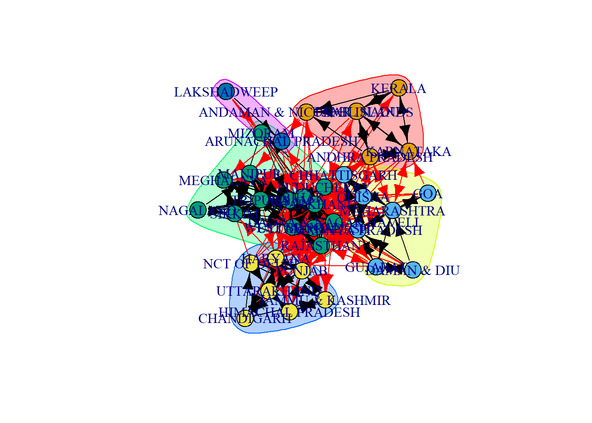
#modularity
mod_m<-modularity(marto.wt)
mod_m[1] 0.16409set.seed(20)
#Run clustering algorithm: spinglass
marto.spin<-spinglass.community(mig_mar_ig)
#Inspect community membership
igraph::groups(marto.spin)$`1`
[1] "ANDHRA PRADESH" "KARNATAKA"
[3] "ANDAMAN & NICOBAR ISLANDS" "TAMIL NADU"
[5] "KERALA"
$`2`
[1] "DADRA & NAGAR HAVELI" "MAHARASHTRA" "UTTAR PRADESH"
[4] "GUJARAT" "JHARKHAND" "ODISHA"
[7] "CHHATTISGARH" "MADHYA PRADESH" "MIZORAM"
[10] "DAMAN & DIU"
$`3`
[1] "HIMACHAL PRADESH" "PUNJAB" "CHANDIGARH" "NCT OF DELHI"
[5] "PUDUCHERRY" "JAMMU & KASHMIR" "UTTARAKHAND" "HARYANA"
[9] "RAJASTHAN"
$`4`
[1] "WEST BENGAL" "TRIPURA" "ASSAM"
[4] "NAGALAND" "BIHAR" "SIKKIM"
[7] "GOA" "ARUNACHAL PRADESH" "MANIPUR"
[10] "MEGHALAYA" "LAKSHADWEEP" #add community membership as a vertex attribute
nodes_m$comm.spin<-marto.spin$membership
#plot the network with community coloring
plot(marto.spin,mig_mar_ig)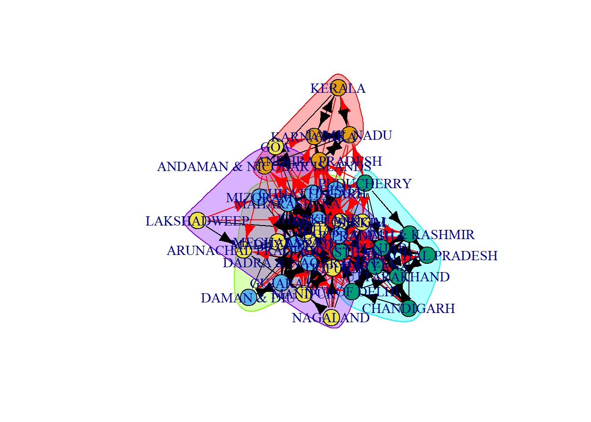
#collect modularity scores to compare
mod_spin_m<-modularity(marto.spin)
mod_spin_m[1] 0.009442108I chose to use the QAP test since both my networks had the same nodes but were created with different tie content.
The plot depicts that the differences between the two networks is statistically significant. Moreover, the negative correlation further strengthens the dissimilarity between the migration network for work and migration network for marriage.
gcor(mig_work_stat,mig_mar_stat)[1] -0.04724667qap<-qaptest(list(mig_work_stat,mig_mar_stat),gcor,g1=1,g2=2)
qap
QAP Test Results
Estimated p-values:
p(f(perm) >= f(d)): 0.86
p(f(perm) <= f(d)): 0.157 plot(qap, xlim=c(min(qap$dist)-.02, qap$testval+.02))
abline(v=qap$testval, col="red")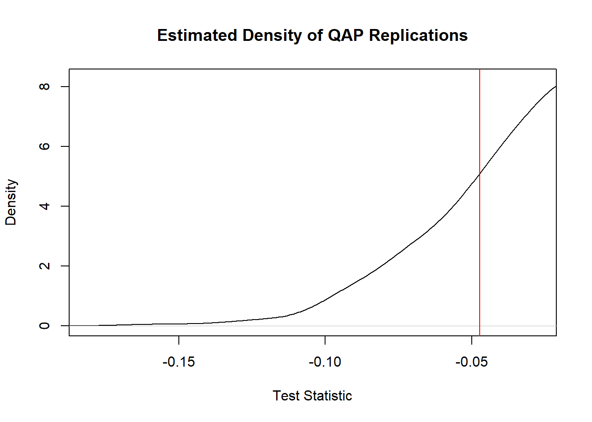
To summarise, there is a difference observed for the patterns of movement for work and marriage. For the threshold considered in the project (at least a proportion of 20%), it is clear that more people move for work than for marriage. Moreover, people moving for work are open to move to multiple geographic regions whereas people moving for marriage mostly move within the same geographic region. The major region of out migration for work was observed to be parts of North and East India but no such major region of in migration for work was found. Finally, several of the top sending states of migrants due to marriage were simultaneously top receiving states of migrants due to marriage.
In future research, this analysis can be extended to the other reasons for migration present in the Census dataset, including but not limited to movement for education, business and within the household. Additionally, it may be interesting to observe if the patterns of movement for a particular reason has changed over years, by incorporating Census data from various time periods. It would also be helpful to study trends in Census data in the 2020-2030 decade when it is released.
Bhardwaj, A., & Batra, S. (2022, July 26). No census 2021 in 2022 either - govt ‘puts exercise on hold, timeframe not yet decided’.ThePrint.https://theprint.in/india/no-census-2021-in-2022-either-govt-puts-exercise-on-hold-timeframe-not-yet-decided/1055772/
Government of India. (n.d.).Drop-in-article on census - no.8 (migration).
https://censusindia.gov.in/nada/index.php/catalog/40447
Lumen Learning. (n.d.). Systems of Social Stratification. https://courses.lumenlearning.com/wm-introductiontosociology/chapter/systems-of-social-stratification/
Office of the Registrar General India. (2021). D-03: Migrants within the State/UT by place of last residence, duration of residence and reason of migration - 2011.
[India]. https://censusindia.gov.in/census.website/data/census-tables
Sahgal,N., Evans, J., Salazar, A.M., Starr, K.J. & Corichi, M. (2021, June 29). 4. attitudes about caste. Pew Research Center’s Religion & Public Life Project. https://www.pewresearch.org/religion/2021/06/29/attitudes-about-caste/